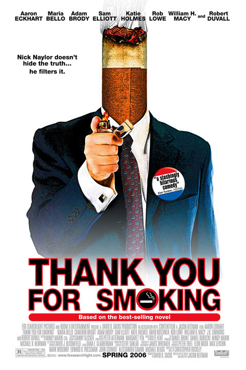

Thank You For Smoking
The Summary
Nick Naylor (Aaron Eckhart), a lobbyist for big tobacco, finds it difficult to balance his duties defending the dangerous substance with those of being a good role model for his young son. Nick's life gets even more complicated when a liberal senator mounts an anti-smoking campaign that he must counter. Based on the novel by Christopher Buckley.

When only the purest filtered truth will do.
Top Billed Cast
- Aaron Eckhart – Nick Naylor
- Maria Bello – Polly Bailey
- Cameron Bright – Joey Naylor
- Adam Brody – Jack
- Sam Elliott – Lorne Lutch
- Katie Holmes – Heather Holloway
- David Koechner – Bobby Jay Bliss
- William H. Macy – Senator Ortolan Finistirre
- J.K. Simmons – BR
- Robert Duvall – Captain
- Kim Dickens – Jill Naylor
- Rob Lowe – Jeff Megall
- Todd Louiso – Ron Goode
- Dennis Miller – Himself
- Joan Lunden – Herself
- Jeff Witzke – Kidnapper
- Richard Speight Jr. – Ricky Del, the Eager Trainee
- Nancy O'Dell – Herself